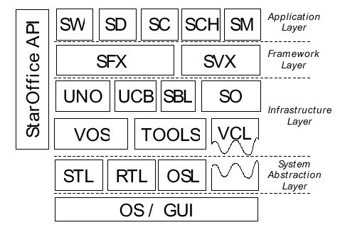

Sun Microsystems, Inc.
901 San Antonio Road
Palo Alto, CA 94303
1 (800) 786.7638
1.512.434.1511
Copyrights and Trademarks
Copyright 2000 Sun Microsystems, Inc., 901 San Antonio Road, California 94303, U.S.A. All rights reserved.
This documentation is distributed under licenses restricting its use. You may make copies of and redistribute it, but you may not modify or make derivative works of this documentation without prior written authorization of Sun and its licensors, if any.
Sun, Sun Microsystems, the Sun logo, StarPortal, StarOffice,the StarOffice logo, Java, JavaBeans, JavaScript, and the Java Coffee Cup are trademarks or registered trademarks of Sun Microsystems, Inc. in the U.S. and other countries.
UNIX ® is a registered trademark in the United States and other countries, exclusively licensed through X/Open Company, Ltd.
DOCUMENTATION IS PROVIDED "AS IS" AND ALL EXPRESS OR IMPLIED CONDITIONS, REPRESENTATIONS AND WARRANTIES, INCLUDING ANY IMPLIED WARRANTY OF MERCHANTABILITY, FITNESS FOR A PARTICULAR PURPOSE OR NON-INFRINGEMENT, ARE DISCLAIMED, EXCEPT TO THE EXTENT THAT SUCH DISCLAIMERS ARE HELD TO BE LEGALLY INVALID.
Contents
CHAPTER 1: Summary
CHAPTER 2: OpenOffice.org Components
OpenOffice.org Suite
OpenOffice.org wordprocessor application
OpenOffice.org spreadsheet application
OpenOffice.org presentation application
OpenOffice.org drawing application
OpenOffice.org data charting application
System Integration
CHAPTER 3: Interoperability
File Formats
Component Technology
The OpenOffice.org Component Technology
CHAPTER 4: Openness
XML File Format
Application Programming Interfaces
Application Areas
Design Principles
Architectural Paradigm
Object Model
Common Design Patterns
Module Categories
Summary
CHAPTER 5: Architecture
Layered architecture
System abstraction layer
Operating system layer
Runtime library
Standard Template library
Visual Class library
Infrastructure layer
Virtual Operating System layer
Tools libraries
Universal Network Objects
Universal Content Broker
OpenOffice.org Compound Objects
OpenOffice.org Scripting and Basic library
Framework layer
OpenOffice.org Application framework library
SVX Library
Application layer
CHAPTER 6: Build Environment
Open Source projects
The Build Experience
Build Requirements
Downloading the Source
Build Prerequisites
Build and Install Instructions
Build Tools & Makefiles
Build Environment
Build Troubleshooting
Porting to Other Systems
Build Documentation & Infrastructure
Outlook
Current Source Tree
CHAPTER 7: Future Steps
An Open World Component Technology
Current Situation
A Short Term Solution
Vision
Unified Component Ware
Outlook
CHAPTER 8: Appendix A
The purpose of this paper is to provide a technical overview of the OpenOffice.org source project.
It is expected that as the OpenOffice.org source project matures, some of these details will evolve. This document will be updated periodically to reflect the nature of these changes to the OpenOffice.org source project. If you would like to contribute to any updates to this document, please join the OpenOffice.org general mailing list (www.openoffice.org).
The names used in this document for OpenOffice components, such as "OpenOffice.org wordprocessor application" are placeholders. The OpenOffice.org community will ultimately decide what these final names will be. This document will be updated when the component names have been finalized.
Version Publication Date Change Notes Version 1.0 9/12/2000 First version of this paper.
Through the OpenOffice.org source project, Sun Microsystems is open-sourcing the technology that powers its StarOffice[tm] office productivity application suite. Sun recognizes that the open source community expects openness, interoperability, and adherence to standards and, now that the underlying technology of the StarOffice suite will be available to the community in the form of the OpenOffice.org sources and binaries, Sun presents in this document the OpenOffice.org suite's technological foundations and where they stand with respect to these expectations.
The OpenOffice.org suite's high level of interoperability derives from the standards it supports as well as its premier import/export interfaces with the various office productivity applications produced by Microsoft. The OpenOffice.org suite employs a component-based development system that exemplifies all the important characteristics of Component Ware - consistent interface allocation, support for important component standards, transparent localization components, batch job capability, and platform independence.
OpenOffice.org's component technology is open, object oriented, interface based, and independent of both platform and development system. The OpenOffice.org API is version independent, scalable, durable, and re-applicable. Because the component technology is used in its implementation, the OpenOffice.org API is programming language independent.
XML replaces binary as OpenOffice.org's file format and becomes the suite's new native file format. Sun and OpenOffice.org are positioning XML, with its extremely high standards profile, as the next standard for exchange of office documents.
CHAPTER 2
OpenOffice.org Components
OpenOffice.org is a unified suite of productivity applications for all common office applications, including such functions as word processing, spreadsheets, drawings, presentations, data charting and formula editing. All components of the suite employ the same user interface concepts and underlying technology. They interoperate closely with one another, supporting features like inter-application copy-and paste and drag-and-drop for creating compound documents. It is straightforward to embed a spreadsheet in a text document, for example. They also interoperate well with other common desktop productivity application suites, including the various office productivity applications produced by Microsoft, for ease of document exchange. A scripting environment called OpenOffice.org Basic is supported in all OpenOffice.org components to automate work or build solutions.
OpenOffice.org wordprocessor application 1
The OpenOffice.org wordprocessor application is a powerful tool for creating professional documents, reports, newsletters, and brochures. It is easy to integrate images and charts in documents, create business letters and extensive text documents with professional layouts, as well as create and publish Web content.
Footnote:
1 Component names are placeholders and will be replaced with actual names when said names are finalized; see the Preface for more information.
OpenOffice.org spreadsheet application
The OpenOffice.org spreadsheet application features decision making analysis tools for performing advanced spreadsheet functions and data analysis. Charting tools generate presentation applicationive, high-quality 2D and 3D charts.
OpenOffice.org presentation application
The OpenOffice.org presentation application is a tool for creating multimedia presentations. Included are 2D and 3D clipart, special effects animation, and high-impact drawing tools.
OpenOffice.org drawing application
The OpenOffice.org drawing application is a vector-oriented drawing module that enables the creation of dynamic 3D illustrations and special effects.
OpenOffice.org data charting application
The OpenOffice.org data charting application presents complex data in visually presentation applicationive ways, from colorful 3D charts to simple pie, bar, and line diagrams.
The overarching goal for the OpenOffice.org suite is to provide a comprehensive set of solutions for all office related functionality in an open world. The focus for all OpenOffice.org components is office functionality.
This is the reason why all office components should provide a perfect integration into already existing environments. Instead of competing with already accepted applications, the OpenOffice.org source project will provide the flexibility to use the office functionality in these applications as integrated parts. This will allow the use, for example, of office productivity files from a variety of vendors, including Microsoft, as mail attachments on every platform. In the future, it will also open up a way to build highly sophisticated applications and solutions with integrated office functionality.
Future releases of the OpenOffice.org applications should provide the flexibility to use different messaging components for Mail and News or let the user decide which tools he wants to use to explore the filesystem, while at the same time the office components can be an integrated part inside this application to deal with word-processing, spreadsheet, etc. related content.
Some technology used in the StarOffice product was licensed from other companies. Accordingly we are not able to provide the following technologies as Open Source under the OpenOffice.org source project:
Future releases of the OpenOffice.org components may provide open source replacement for these parts, which will provide similar functionality.
For exchanging information it is important that two individuals have a common language. For exchange electronic information today it is not hard to transport this information to different system, instead the problem is in most cases that users use different applications to do their work and to create content. So very often in the domain of office productivity you can only read the document with the same application you created the content, because the file format are proprietary. In some case it is also required to use the same release of the application, the same operation system release or run this on the same platform.
To give the user the freedom to use applications and the system which is appropriate for his work, it is important that the system is able to handle a widespread set of file formats. Especially for word-processing, spreadsheet, presentation it is often necessary to be able to read the different binary formats used by the various office productivity applications produced by Microsoft.
On the other hand interoperability is not only necessary for content. It is also necessary that the components which are able to process the different file formats can be used in an heterogeneous environment to build up solutions. Otherwise you would be locked into another application space. Today's software technology is moving forward from having libraries to component technology, which will not only allow using different programming languages to build solutions, instead it will in most cases support using a scripting language to provide the logical glue between high-level component build rapidly easy adaptable software solutions.
One of our primary objectives is to provide interoperability with existing solutions in the same application domain. We support a wide range of standard file formats such as HTML, RTF, GIF, and JPEG as well as Microsoft's proprietary file formats because of their widespread use. OpenOffice.org provides the highest quality document import and export functionality for the various office productivity applications produced by Microsoft.
Documents formats ASCII CSV Microsoft Excel for Windows 97/2000 ASCII Text Microsoft Word for Windows 6.0 dBase Microsoft Word for Windows 95 DIF Microsoft Word for Windows 97/2000 Encoded Text PowerPoint 97/2000 HTML Rich Text Format (RTF) Lotus 1-2-3 1.0 DOS SYLK Lotus 1-2-3 1.0 Windows Text DOS Lotus Freelance Text OS/2 Microsoft Excel for Windows 5.0 Text Unix Microsoft Excel for Windows 95 Text Win Graphic formats Adobe Photoshop (psd) Portable Network Graphics (png) AutoCAD (dxf) PPM CompuServe Graphics (gif) SGF Computer Graphics Metafile (cgm) SGV Encapsulated PostScript (eps) SUN Raster-Format JPEG Bitmaps (jpg) TGA Kodak Photo-CD (pcd) TIFF-Bitmap Macintosh PICT (pct) Truevision TARGA (tga) MS Windows Metafile (EMF) Windows Bitmap (Bmp) OS/2 Metafile (met) Windows Metafile (wmf) Paint Brush (pcx) XBM PBM XPM PGM
Despite the rise of the graphical user interface and a constant flow of new innovations in the software industry, software development has become only more complicated over the years. Creating high quality applications increases demands on the user, which in turn lead to more and more expendable programs. Component based program development systems promise a welcome change in this trend. They are based on the JavaBeans architecture or the Component Object Model (COM), which are also called Component Ware. The programmer can access previously prepared components (building blocks) with these products, and use them in applications. The components are ready for immediate use once they have been adapted to the operational area.
The authors of the StarOffice product experienced this situation three years ago when developing a new software architecture, which for the first time made an office suite available on different platforms for use as an important building block. In the subsequent planning and development period, a need for the following attributes in this new architecture was realized:
The OpenOffice.org suite provides a component technology named Universal Network Objects, which adheres to all these requirements of modern Component Ware and it is formed on the Object Technology level, which is the basis upon which the OpenOffice.org API is set up.
This component technology is:
Opening up all specification, file formats, technologies and last but not least the source code, will help ensure that no one can be locked into an application, platform or environment space. But just providing all this information to everyone is not enough. Openness will also required that already existing open standards and technologies were used when ever appropriate and also the project over time will evolve newer technologies and adapt other open standards.
We adopted XML to replace the old binary file format and become the OpenOffice.org suite's new native file format. Our goals were twofold: to have a complete specification encompassing all components, and to provide an open standard for office documents. One single XML format applies to different types of documents - e.g., the same definition applies for tables in texts and in spreadsheets. XML is ideal as an open standard because of the free availability of XML specifications and DTDs, and XML's support for XSL, XSLT, Xlink, SVG, MathML, and many other important and emerging standards.
Beside replacing the binary file format with XML, the OpenOffice.org suite will use XML internally for exchanging any type of content between the different applications. OpenOffice.org provides today an infrastructure for using different XML components. The XML-Parser and the XML-Printer are all implemented as components. Every of these component support the Simple API for XML (SAX). This infrastructure will allow in the future to dynamically configure a pipelines of different XML components, like XML-Parser, XSLT-Processor, etc. to process XML-Input and Output. This will allow transformation of XML-Data into different formats on the fly, without storing intermediate files and parse them again for every transformation step.
Application Programming Interfaces
The OpenOffice.org API is based on the OpenOffice.org component technology and consists of a wide range of interfaces defined in a CORBA-like IDL. While the component technology determines how the components or applications communicate with each other, the OpenOffice.org API defines the interface for accessing office functionality from different programming languages. This interface structure is very important in determining the degree to which re-application of a development is possible.
The interfaces defined by the OpenOffice.org API are characterized as follows:
There are multiple ways to use OpenOffice.org APIs. First, there is the typical macro programming for running certain tasks automatically. Secondly, parts of OpenOffice.org can be run as components of other programs; e.g., OpenOffice.org components are accessible as JavaBeans components.
A more advanced application is to modify OpenOffice.org components by wrapping them into replacement components or integrating completely new components with OpenOffice.org.
A very interesting application area is to replace the user interface of OpenOffice.org and build a completely different application domain.
Some principles that are important in all our designs are:
Our architectural decision is Interfaces and Support-Classes instead of Implementation Inheritance.
Interfaces and Support-Classes means that objects communicate only by interfaces. Support classes are used for recurring implementations. This was the choice for our design because components are highly independent of environment, language and version Implementation Inheritance means partly implemented base classes from which specialized classes derive interface and implementation. This paradigm was not our choice, because in larger systems this leads to fat interfaces or deep inheritance hierarchy. In addition, components depend on the environment, mostly via their base class, and are programming language dependent and highly version dependent.
The OpenOffice.org API is designed for and implemented using the OpenOffice.org Component Technology. Therefore the OpenOffice.org API is programming language independent and can be used from C/C++, Java, and several scripting languages. For other languages, only a language binding needs to be provided to access the whole OpenOffice.org API. The API is made up by following stereotypes:
The OpenOffice.org API uses heavily designed patterns, which provide a very consistent overall design. Some examples of application domain unspecific design patterns are:
The OpenOffice.org API is organized in a hierarchical module concept which follows Java technology package or CORBA conventions.
The results and benefits of the OpenOffice.org source projects principles and activities to date are manyfold. One can build new applications from components without modifying source code. One can use a familiar programming language. The entire API is documented in a reference manual ¯ http://soldc.sun.com/staroffice. A first release of a Development Kit, containing support of the OpenOffice.org Basic and also Java technology, is available.
The OpenOffice.org source project is based on an architecture that can provide comprehensive personal productivity to different UNIX-based systems and may be ported many other platforms as well. This is because the whole technology is based on a platform-independent approach. Less than 10% of the code is platform dependent. This acts as an abstraction layer for the upper software components. Because of the availability of C++-Compilers on every major platform, C++ is used as an implementation language. This allows to port the OpenOffice.org technology to a wide range of different platforms. The decision for an object oriented language gives the OpenOffice.org source project the opportunity deliver a fully object oriented architecture.
The following information will give just a rough overview over the overall architecture. Some components of the OpenOffice.org source project like the help-system or the setup application are not covered here. Many parts of the OpenOffice.org source project consists of more than one CVS module. In many cases one block in the architecture is covered by more than five CVS modules in the source tree.
The whole architecture is based on a layered approach. There are four defined layers where each covers a special area of the functionality.

The layered approach of the system architecture is one of the important facts to allow the easy porting of the technology to wide range of different system platforms. For this the architecture defines a virtual layer witch is called the System Abstraction Layer (SAL). All platform depended implementation take place below this layer or are part of some optional modules. In an ideal world an implementation of the SAL specific functionality and recompiling the upper layer module will allow you to run the applications. To provide the whole set of functionality the optional platform specific modules, like telephony support or speech recognition, have to be ported, too. To reduce the porting effort the set of functionality provide by the SAL is reduced to a minima set available on every platform. Also for some system the layer includes some implementations to emulate some functionality or behavior. For example on systems where no native multi threading is supported, the layer can support so called “user land” threads.
At this time the implementation of the platform dependent and independent parts of the graphical library is linked into one dynamically loaded shared library. So there is no well defined set of libraries which build up the SAL.
The operating system layer (OSL) encapsulates all the operating system specific functionality for using and accessing system specific resources like files, memory, sockets, pipes, etc. The OSL is a very thin layer with an object oriented API. In contrast to the upper layer this object oriented API is a C-API. This will allow to easily port this layer to different platforms using different implementation languages. For embedded systems or internet appliances for examples an assembler language can be used to realize the implementation.
The runtime library provides all semi platform independent functionality. There is an implementation for string classes provided. Routines for conversion of strings to different character sets are implemented. The memory management functionality resides in this module.
As a generic container library the standard template library is used. It supplies implementations for list, queues, stacks, maps, etc.
The visual class library is one of the core libraries of the OpenOffice.org technology. The VCL encapsulate all access to the different underlying GUI systems. The implementation is separated into two major parts. One is completely platform independent and includes an object oriented 2D graphics API with metafiles, fonts, raster operations and the whole widget set use by the OpenOffice.org suite. This approach virtually guarantees that all widgets have the same behavior independently of the used GUI system on the different platforms. Also the look & feel and the functionality of the widgets are on all platforms the same.
Because of this design VCL doesn't encapsulate the native widgets or controls of the underlying GUI system. The platform dependent part implements a 2D-graphic drawing canvas which is used by the platform independent parts. This canvas redirect every functionality directly to the underlying GUI system. Currently there exists implementation for the Win32, X-Windows, OS/2 and Mac. The access to the printing functionality, clipboard and Drag & Drop is also realized inside the VCL.
Virtual Operating System layer
To make the usage of system resources like files, threads, sockets,etc. more convenient the virtual operating system layer encapsulates all the functionality of the operating system layer into C++ classes. The C++ classes here offer an easy to use access to all system resources in an object oriented way.
There are different small libraries building up a set of tool functionality. This includes a common implementation for handling date and time related data. There is in implementation for structured storages available. Other implementation provide a generic registry, typesafe management and persistence of property data.
The so called Universal Network Objects are the component technology used inside the OpenOffice.org products. The component technology does not depend on any graphical subsystem, but is heavily based on multithreading and network communication capabilities.
The system consists of several pieces. An IDL-Compiler, which generates out of the specified definition of an interface a binary representation and the associated C-Header or Java technology files. The binary representation is platform and language independent and is at runtime used to marshall argument for remote function calls or to generate code on the fly for a specific language to access the implementation provided by the interface. This technique reduced the amount of generated code for the different language binding tremendously. The drawback is that not only for every language binding a specific backend for the code generation is needed, it is that for every specific compiler a bridging module is needed at runtime.
Many parts of the UNO technology are implemented as UNO components. This helps to create a very flexible system and also the extension of the system at runtime. For example by providing new bridges or communication protocols. UNO provides transparent access to components over the network or locally. For the communication over the network IIOP can be used. If the component are realized as shared libraries the component can be loaded by UNO into to the process memory of the application and every access of the component is just like a function call without any marshalling of arguments which is required for remote function call.
The Universal Content Broker allows all upper layers to access different kind of structure content transparently. The UCB consists of a core and several Universal Content Providers which are used to integrate different access protocols. The current implementations provides content providers for the HTTP protocol, FTP protocol, WebDAV protocol and access to the local file system.
The UCB does not only provide access to the content, it also provides the associated meta information to the content. Actually there is synchronous and asynchronous mode for operations supported.
OpenOffice.org Compound Objects
The Compound Object implementation provide the functionality to build compound documents, where for example a spreadsheet is being embedded in a word-processor document.
The current implementation provides a platform independent implementation of all this functionality for compound documents and for embedding of visual controls like multi media players or different kind of viewers. All content of compound document is stored in a structured storage. The current implementation is compatible to the OLE structure storage format. This allows access to OLE compound documents on every platform where OpenOffice.org is available. On the Windows platform the implementation interact with the OLE services and will so allow a tight integration of all OLE capable applications.
OpenOffice.org Scripting and Basic library
The scripting functionality coming with the OpenOffice.org suite is a BASIC dialect featuring an interpreter that parses the source statements and generates meta instructions. These instructions can be executed directly by the supplied meta instructions processor or can be made persistent in modules or libraries for later access. All functionality supplied by the upper level application components is accessible via a scripting interface in the component technology. This will help to ensure that new components using the OpenOffice.org component technology can be fully scriptable without spending a huge amount of effort.
The scripting interfaces are also implemented as components which will allow an easy integration of other scripting languages. The interfaces provide functionality like core reflection and introspection similar to the functionality by the Java platform.
OpenOffice.org Application framework library
The Application framework library provides an environment for all applications. All functionality shared by all application and not provided by any other layer is realized here. For the framework every visual application has to provide a shell and can provide several views. The library provides all basic functionality so only the application specific features have to be added.
The Framework is also responsible for content detection and aggregation. The template management is provided here and the configuration management too. The Framework is in some areas related to the compound documents, because of the functionality for merging or switching menu- and toolbars. Also the capability for customization of all applications is provided by the library.
The SVX library provides shared functionality for all applications which is not related to a framework. So part of the library is a complete object oriented drawing layer which is used by several applications for graphic editing and output. Also a complete 3D-rendering systems is part of the drawing functionality.
The common dialogs for font selection, color chooser, etc. are all part of this library. Also the whole database connectivity is realized here.
All applications like the wordprocessor application, spreadsheet application, presentation application, charting application, etc. build up this layer. All these applications are realized as shared libraries, which are loaded by the application framework at runtime. The framework provides the environment for all these applications and also provides the functionality for how these applications can interact.
The following information provides an overview of the proposed Build Experience for OpenOffice.org and how we hope it will evolve. This information is intended for developers and engineering managers.
Open Source projects follow by now a very familiar pattern when it comes to providing a Build Experience. This translates as follows:
It is important to understand that the Build Experience will be an evolving model, one that will grow and gain from the experience of the Open Source Developer Community.
The task facing us is a challenging one. The OpenOffice.org suite is a very large application from any standpoint. It is a complex application consisting mainly of C++ code employing templates and exception handling and supporting independent language binding for a distributed component based architecture.
The Build Experience will cover the following areas:
The OpenOffice.org sources will build on the Solaris(TM) operating environment, Linux, and WIN32 platform. Work is in progress on the Macintosh platform. Each system will describe the software and hardware requirements to build on their respective systems. Typical of these will the version of gcc, the Java Technology JDK , hard disk and RAM sizes.
It is crucial that these requirements be understood at the outset. Building the OpenOffice.org sources is not a task to be taken lightly. It may turn out to be the largest open source project ever in terms of source size and time to build. The source and build environment size is in the region of 500MB and consists of approximately 40,000 files. It can take up to 18 hours to fully build from scratch, but this is rarely needed. The build environment is prepared to allow working with milestone builds.
The source may be downloaded using CVS, or ftp can be employed to download gzipped tarballs of the source. In addition, milestone completed builds will be made available in gzipped tarball format plus daily snapshots of the source.
The OpenOffice.org technology relies on a number of external sources to be built. Instructions on where to locate and download these will be available.
Build and Install Instructions
The OpenOffice.org technology will use autoconf to check the integrity of the build environment and to set up the correct build environment on the supported platforms.
After setting up the build environment, the build and install instructions will support the make and make install concepts. Details on building all the source as well as build components will be available.
The OpenOffice.org technology is built using dmake from the http://dmake.wticorp.com . This is itself an open sourced project. The syntax is a make like syntax. The dmake options will support a dmake all, dmake <component> and dmake install concepts.
The OpenOffice.org source project team has also developed a number of development tools including support for Interface Definition Language formats, resource pre-processors and bitmap creators. All these will be fully explained.
The OpenOffice.org technology relies on a large set of environment variables as well as compiler pre-processor options and flags. These will be documented to support greater understanding of the build environment among developers.
The OpenOffice.org technology is a CVS module based source tree. These CVS modules will have an overview explanation plus an explanation of the order in which they are built.
A troubleshooting guide and Build FAQ will be published to support developers.
The OpenOffice.org technology for its supported platforms will rely on a bootstrap process that is in place in order to build it. To port the OpenOffice.org technology, developers will need to know how to create this bootstrap in the first place.
Build Documentation & Infrastructure
An online Build manual will exist to cover all the topics described above. There will also be a support infrastructure in place to deal with specific build issues. Bugzilla will be employed to store all bugs and issues arising from the build.
Providing a clean Build Experience which is familiar and consistent to the Open Source Community is not only our aim but we see it as critical to the success of this project. Although this experience has not yet reached full fruition, Sun has determined not to delay the release of the source for this reason. It is more important that we engage with the community than to wait until we have replicated the same build experience. To this end we are committed to providing as clean a build as possible now while putting an infrastructure in place to allow us to evolve to a more standard model.
The OpenOffice.org source project will be among the largest open source projects. There are about 70 CVS modules with more than 35,000 files providing about 5,000,000 lines of code.
Appendix A gives a first overview over all CVS modules with a short description of the purpose. Additional information will be made available at the website / .
An Open World Component Technology
Nowadays there is no Component Technology in the Open world which is accepted by everyone. There exist different open source projects which are based on a component model, but each of them uses its own concept or technology.
KDE and GNOME are in the Desktop domain. Both of them are using CORBA as a low-level communication layer but the component models on top are completely different in each project. So today it is essentially impossible to write a component which can be used in both desktop environments. Also the current CORBA specification doesn't include a model for compound documents or other desktop software related functionality. So there are different efforts underway to overcome these problems, but they lack interoperability. Another issue with most CORBA implementations is that these were designed to run distributed network based applications using remote services. So using such CORBA implementation with all the network communication overhead in an infrastructure for a desktop component model, which in most cases will run on one local machine, will be in most cases the wrong approach.
When the Mozilla open source project started, there was a requirement to have a lightweight component model which could be easily ported to different platforms. So XPCOM was created.
The reasons why the OpenOffice.org suite currently employs its own component model are all based on these issues. Additionally, there is the requirement to provide a similar set of office suite functionality and technology to the widely used Microsoft products in this domain.
As discussed above, there is no component technology available which is well accepted, portable and used prevalently. So to provide office functionality in different environments, it is necessary that different component technologies be supported. Supporting different component technologies is difficult but possible, but supporting different concepts or philosophies is quite impossible.
Because OpenOffice.org's component technology is able to use software bridges to access other components' worlds, it is possible to integrate the office components into different environments, such as GNOME and Mozilla. The bridging can be easily done in an environment where the basic concept for the components are quite similar. In any other case in can be very hard to provide this bridging functionality hiding all conceptual differences. In most cases developers and users will have to deal with the different concepts and philosophies. One of the annoying problems for example will be the different naming convention. Also if a bridge needs to deal with a complex conversion of arguments and calling conventions, performance issues could arise.
So in the near future we will provide bridges from OpenOffice.org component technology to XPCOM and Bonobo. OpenOffice.org components can than be used in these environment as integrated components.
The past has shown the importance of a homogenous component technology and an object model which integrates all software components into one easy-to-use building set. The use of existing building blocks in different development environments like C/C++, Java technology, Pyton, Perl, VB, etc. should be transparently provided by a component technology.
The object model should define the reuse of existing interfaces and components and the matching of concepts over a wide array of applications. It should define common base concepts that will be used no matter what component is being reused or what application is being built.
One challenge for the Open World will be to provide one efficient component technology and a homogenous, superior object model for the desktop, the office productivity suite, and the browser.
A unified Component Technology should meet what is required for today's solutions. This will not guarantee that the technology will fulfill all future requirements, but it will allow the replacement of the existing solutions over time and it will increase acceptance by the Open World. To ensure a high level of acceptance, open standards should be used whenever appropriate.
CORBA is an open standard that is widely accepted for building heterogeneous distributed systems. On the other hand the CORBA specification falls short in the areas of compound documents and small components for personal productivity. This has changed to some extent with the CORBA 3.0 specification, but there are still open issues. For a desktop environment there is a need for support of in-process components and for local communication features, which are today still open to implementation in the CORBA environment. To the extent that these features are transparent to all components, there is no need for a clear specification, but in most cases today the developer of the component and the developer of the application using these components has to deal with this situation. Another problem for an open component system is the lack of a technology and a concept for writing cross-platform graphical components.
ORBit is the CORBA implementation used by most of the GNOME components. It is fast and lean, allowing the use of CORBA in areas that would not normally seem practical. It supports much of the CORBA 2.2 standard, and has hooks that allow easy integration with GNOME programs. ORBit provides language binding for Perl, C++, Tcl, Python, ADA and Eiffel, but currently not for Java technology. It allows C and C++ objects in the same address space to short-circuit calls (i.e. no on-the-wire marshaling) for maximum speed. The ORBit is a good candidate starting point for an open component technology. It could provide the functionality for all communication infrastructure and will allow interoperability with CORBA. While CORBA is an accepted standard, the ice Component Model provides the ability to bridge easily from one component environment to another, which will for example allow the usage of components in the Microsoft world. Also, the Mozilla XPCOM technology is a very lightweight and lean system that it could provide some advantages for an overall system.
On top of this communication and low level object infrastructure there should be a clear definition of interfaces for commonly used functionality, such as factories and reference-counted objects. There is also a requirement for a clear concept for lifetime management of components, activation, security and the integration into a graphical subsystems. All these interfaces should be designed for use in many different application domains. Especially for personal productivity tools and desktop environments, we need a clear concept and definition of interfaces to build up an infrastructure for:
Not every developer wants to deal with all the details of a component model. Therefore, to achieve acceptance, it is important to provide helper libraries for different languages that make the usage and the implementation of components as easy as possible.
We have started an initiative for a new homogenous component technology by talking to several developers in different open source projects. We will work together with different groups to provide a leading edge component technology for a desktop environment and distributed applications. To the extent that standards are available and meet the requirements, they will be used. We would like to see the best pieces of today's existing technologies (e.g. Bonobo, XPCOM, UNO ...) be integrated into this technology.
Also we would like to start an effort with several open source projects to define the concept, the naming conventions and philosophy for an Open World component mode. By the time the component model is available it will be used by all OpenOffice.org components, and the OpenOffice.org API will be adapted over time to meet the specification of the new component model. In the future this will allow writing highly sophisticated applications and solutions by using existing components exclusively.
| Project | Modules | Description |
|---|---|---|
| Xml file formats | ||
| xmloff | Import/Exportfilter for XML | |
| sax | SAX UNO-components for xml-parsing and writing. | |
| L10N | ||
| i18n | Internationalization Functionality. | |
| transex3 | L10N Tools | |
| openoffice.org wordprocessor application |
||
| sw | OpenOffice.org wordprocessor application | |
| starmath | OpenOffice.org math application | |
| lingu | Linguistics stub | |
| Openoffice.org spreadsheet application | ||
| sc | openoffice.org spreadsheet application | |
| scaddins | openoffice.org spreadsheet application addins | |
| Graphic applications | ||
| sd | OpenOffice.org drawing application | |
| sch | OpenOffice.org charting application | |
| goodies | Collection of graphic filters and 2d and 3d drawing | |
| Svx | Collection of graphic layers and Collection of API used by all OpenOffice.org Applications | |
| Database Access | ||
| sdb | Database driver layer. | |
| dbaccess | Database access layer | |
| connectivity | OpenOffice.org Base Connectivity | |
| Porting | ||
| sal system abstraction layer | Low level API for the integration of all supported platforms. | |
| Buildtools and Buildenvironment | ||
| solenv | Buildenvironment tools | |
| dmake | Make application | |
| rscpp | Preprocessor for the Resource Compiler. | |
| xml2cmp | Processor for Uno-ComponentDescriptions | |
| jtools | Java technology helper applications | |
| config_office | Helper for buildenvironment configuration | |
| Graphic System Layer | ||
| vcl | Visual Class Library | |
| rsc | Resource compiler | |
| toolkit | VCL Implementation of the UNO Toolkit and the UNO Controls | |
| UnoControls | UNO controls | |
| forms | Forms implementation | |
| Printing | ||
| xprinter | Stubs for the Bristol X-Printer | |
| Scripting Engines | ||
| basic | Basic interpreter and the basic runtime library | |
| basctrl | Basic IDE | |
| Utilities | ||
| tools | Common used base classes (string, date, time, streams, ...) | |
| svtools | Collection of Patterns and help classes | |
| std2 | STL port - a derivative from the SGI/STL. | |
| io | UNO I/O services | |
| eventattacher | Component based event handling | |
| unzip | Compression library | |
| unotools | UNO helper classes | |
| extensions | Additional components | |
| external | External references | |
| configmgr | Configuration management | |
| sot | Compatible storage implementation. | |
| Installation | ||
| setup2 | Setup Application | |
| scp | Packaging scripts | |
| Scptools | Packaging tools | |
| Instsetoo | Installation set creation | |
| Readlicense | Readme and license texts | |
| Extras | Demo documents, help files, resources... | |
| Wizards | Wizards | |
| UCB (Universal Content Broker) | ||
| chaos | Universal Content Broker | |
| inet | Internet transport protocols (FTP, HTTP, LDAP, IMAP, NNTP, POP3, SMTP). | |
| uui | UCB Graphical User Interface Components | |
| ucbhelper | Helper classes for UCB users and Content Provider implementers | |
| store | Reliable, recoverable storage filesystem | |
| ldapber | ||
| StarOffice API | ||
| api | IDL definitions of all interfaces of the OpenOffice.org API | |
| offuh | Generates UNO headers. | |
| UDK (Uno Development Kit) / Componenet Technology | ||
| cppu | C++ UNO core, C++ bridges | |
| unoidl | Interface Definition Language compiler. | |
| cppuhelper | C++ UNO implementation helpers | |
| javaunohelper | Java technology Uno helper implementations | |
| jurt | Java technology UNO Runtime | |
| bridges | UNO bridges from any language | |
| remotebridges | UNO interprocess bridges | |
| stoc | OpenOffice.org components - basic UNO services | |
| cpputools | Collection of UNO utility and runtime programs | |
| registry | Registry | |
| codemaker | IDL compiler backend | |
| rdbmaker | ||
| vos | Object orientated Framework above sal. This module encapsulates sal in C++ classes for ease of use. | |
| Object Integration | ||
| So3 | Compound document implementation | |
| Sj2 | Integration of embedded objects | |
| Ie | Integration of internet explorer | |
| Application Framework | ||
| Sfx2 | Application framework | |
| offmgr | Database components | |
| res | Bitmap resources | |
| idl | IDL compiler for the resources. | |
| framework | Provides Frames Hierarchy for logical managing of components/documents. | |
| desktop | OpenOffice.org (desktop) application | |
| DocumentProperties | Document properties handling |